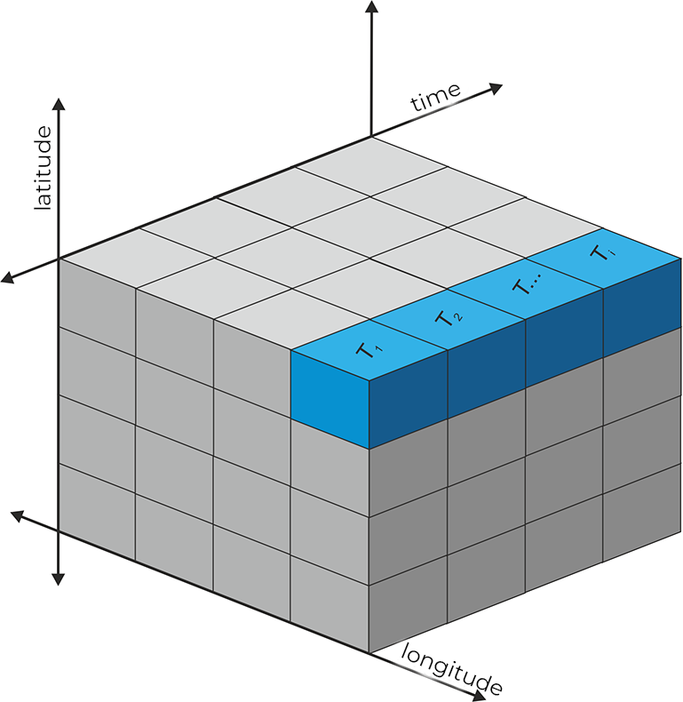

Use of multidimensional spatial data

Initial considerations
Space-time information is vital in many disciplines, especially in climatology or meteorology, and this makes it necessary to have a format that allows a multidimensional structure. It is also important that this format has a high degree of interchange compatibility and can store a large number of data. These characteristics led to the development of the open standard netCDF (NetworkCommon Data Form). The netCDF format is an open multi-dimensional scientific data exchange standard used with observational or model data, primarily in disciplines such as climatology, meteorology, and oceanography. The netCDF convention is managed by Unidata (https://www.unidata.ucar.edu/software/netcdf/). It is a space-time format with a regular or irregular grid. The multidimensional structure in the form of an array allows the use of space-time and multivariable data. The general characteristics of netCDF refer to the use of an n-dimensional coordinate system, multiple variables, and a regular or irregular grid. In addition, metadata describing the contents are included. The extension of the netCDF format is “nc”.

I recently used drought data from Spain in netCDF format with a resolution of 1 km to represent the state of drought for each year since 1960 (https://monitordesequia.csic.es/historico/). The SPEI index (Standardized Precipitation-Evapotranspiration Index) is widely used to describe the drought with different time intervals (3, 6, 12 months, etc.).
{{< tweet 1490260694851362821 >}}
I have been asked on several occasions about handling the netCDF format. For this reason, in this post, we will use a subset of these same data, the year 2017 of the SPEI 12 months.
Packages
Data handling in netCDF format is possible through various packages directly or indirectly. The specifically designed {ncdf4} package stands out, which is also used by other packages, although we don’t see it. Handling with {ncdf4} is somewhat complex, mainly because of the need to manage RAM when dealing with large datasets or also because of the way to handle the array class. Another very powerful package is {terra}, which we know when working with raster data and allows us to use its functions also for handling the netCDF format.
| Packages | Description |
|---|---|
| tidyverse | Collection of packages (visualization, manipulation): ggplot2, dplyr, purrr, etc. |
| sf | Simple Feature: import, export and manipulate vector data |
| lubridate | Easy manipulation of dates and times |
| terra | Import, export and manipulate raster (raster successor package) |
| mapSpain | Spanish administrative limits |
# install the packages if necessary
if(!require("tidyverse")) install.packages("tidyverse")
if(!require("sf")) install.packages("sf")
if(!require("lubridate")) install.packages("lubridate")
if(!require("terra")) install.packages("terra")
if(!require("mapSpain")) install.packages("mapSpain")
# load packages
library(tidyverse)
library(sf)
library(terra)
library(lubridate)
library(mapSpain)For those less experienced with tidyverse, I recommend the brief introduction on this blog post.
Data
First, we download the data here. Then, we import the SPEI-12 index data for 2017 using the rast() function. Actually, in this step, we have only created a reference to the file without importing all the data into memory. We see in the metadata the number of layers available. The SPEI-12 index is calculated weekly with four weeks per month. If we look at the metadata, the definition of the coordinate system is missing, so we define it by assigning the code EPSG:25830 (ETRS89/UTM 30N).
# import
spei <- rast("spei12_2017.nc")
# metadata
spei## class : SpatRaster
## dimensions : 834, 1115, 48 (nrow, ncol, nlyr)
## resolution : 1100, 1100 (x, y)
## extent : -80950, 1145550, 3979450, 4896850 (xmin, xmax, ymin, ymax)
## coord. ref. :
## source : spei12_2017.nc
## names : spei1~017_1, spei1~017_2, spei1~017_3, spei1~017_4, spei1~017_5, spei1~017_6, ...
## time : 2017-01-01 to 2017-12-23# define the coordinate system
crs(spei) <- "EPSG:25830"
# map first weeks
plot(spei)
Extract metadata
There are different functions to access metadata, such as dates, layer names or variable names. Remember that netCDF files can also contain several variables.
# time
t <- time(spei)
head(t)## [1] "2017-01-01 UTC" "2017-01-09 UTC" "2017-01-16 UTC" "2017-01-23 UTC"
## [5] "2017-02-01 UTC" "2017-02-09 UTC"# layer names
names(spei) %>% head()## [1] "spei12_2017_1" "spei12_2017_2" "spei12_2017_3" "spei12_2017_4"
## [5] "spei12_2017_5" "spei12_2017_6"# variable names
varnames(spei)## [1] "spei12_2017"Time-series extraction
One possibility that netCDF data allows is time-series extraction, either from points or areas. For example, we will create here the SPEI-12 time series for the city of Zaragoza and the average for the entire autonomous community of Aragon.
# Zaragoza coordinates
zar <- st_point(c(-0.883333, 41.65)) %>%
st_sfc(crs = 4326) %>%
st_as_sf() %>%
st_transform(25830)The {terra} package only accepts its vector class SpatVector, so it is necessary to convert the point of class sf with the vect() function. To extract the time series we use the extract() function. The extracted data is given back in the form of a table, each row is an element of the vector data, and each column is a layer. In our case, it is only a single row corresponding to the city of Zaragoza.
package_name::function_name).
# extract time series
spei_zar <- terra::extract(spei, vect(zar))
# dimensions
dim(spei_zar)## [1] 1 49# create a data.frame
spei_zar <- tibble(date = t, zar = unlist(spei_zar)[-1])
head(spei_zar)## # A tibble: 6 x 2
## date zar
## <dttm> <dbl>
## 1 2017-01-01 00:00:00 0.280
## 2 2017-01-09 00:00:00 0.25
## 3 2017-01-16 00:00:00 0.220
## 4 2017-01-23 00:00:00 0.210
## 5 2017-02-01 00:00:00 0.350
## 6 2017-02-09 00:00:00 0.220We obtain the average of the autonomous community of Aragon using the polygon geometry and indicating the type of function with which we want to summarize the area. The esp_get_ccaa() function of the mapSpain() package is very useful when importing Spanish administrative boundaries of different levels. In the extraction, we must pass the na.rm = TRUE argument to the mean() function to exclude pixels with no value.
# boundaries of Aragon
aragon <- esp_get_ccaa("Aragon") %>%
st_transform(25830)
# extract the average values of the SPEI-12
spei_arag <- terra::extract(spei, vect(aragon), fun = "mean", na.rm = TRUE)
# add the new values to our data.frame
spei_zar <- mutate(spei_zar, arag = unlist(spei_arag)[-1])In the next step, we transform the table to the long format with pivot_longer(), merging the value of the SPEI index of Zaragoza and Aragon. We will also add a column with the interpretation of the index and change the labels.
spei_zar <- pivot_longer(spei_zar, 2:3, names_to = "reg", values_to = "spei") %>%
mutate(sign = case_when(spei < -0.5 ~ "drought",
spei > 0.5 ~ "wet",
TRUE ~ "normal"),
date = as_date(date),
reg = factor(reg, c("zar", "arag"), c("Zaragoza", "Aragon")))Now it remains to build the graph in which we compare the SPEI-12 of Zaragoza with the average of Aragon. The geom_rect() function helps us draw different background rectangles to mark drought and normal state.
# time series graph
ggplot(spei_zar) +
geom_rect(aes(xmin = min(date), xmax = max(date),
ymin = -0.5, ymax = 0.5),
fill = "#41ab5d") +
geom_rect(aes(xmin = min(date), xmax = max(date),
ymin = -1, ymax = -0.5),
fill = "#ffffcc") +
geom_rect(aes(xmin = min(date), xmax = max(date),
ymin = -1.5, ymax = -1),
fill = "#F3641D") +
geom_hline(yintercept = 0, size = 1, colour = "white") +
geom_line(aes(date, spei, linetype = reg), size = 1, alpha = .7) +
scale_x_date(date_breaks = "month", date_labels = "%b") +
labs(linetype = "", y = "SPEI-12", x = "") +
coord_cartesian(expand = FALSE) +
theme_minimal() +
theme(legend.position = c(.25, .9),
panel.grid.minor = element_blank(),
panel.ontop = TRUE)
Drought map
Spain
To create a map of drought severity in 2017, we must first make some modifications. With the subset() function, we obtain a layer or several as a subset. Here we select the last one to see the state of drought for the whole year.
We replace all values greater than -0.5 with NA in the next step. Drought is considered when the SPEI index is below -0.5 and, on the other hand, if it is above 0.5, we would speak of a wet period.
The raster class is not directly compatible with ggplot, so we convert it to an xyz table with longitude, latitude and the variable. When we do the same conversion of multiple layers, each column will represent one layer. Finally, we rename our index column and add a new column with different levels of drought severity.
# extract layer(s) with their index
spei_anual <- subset(spei, 48)
# substitute non-drought values with NA
spei_anual[spei_anual > -0.5] <- NA
# convert our raster into an xyz table
spei_df <- as.data.frame(spei_anual, xy = TRUE)
head(spei_df)## x y spei12_2017_48
## 38096 123100 4858900 -1.48
## 39195 105500 4857800 -1.59
## 39197 107700 4857800 -1.40
## 39211 123100 4857800 -1.47
## 39212 124200 4857800 -1.50
## 40310 105500 4856700 -1.63# change the name of the variable
names(spei_df)[3] <- "spei"
# categorize the index and fix the order of the factor
spei_df <- mutate(spei_df, spei_cat = case_when(spei > -0.9 ~ "slight",
spei > -1.5 & spei < -0.9 ~ "moderate",
spei > -2 & spei <= -1.5 ~ "severe",
TRUE ~ "extreme") %>%
fct_relevel(c("slight", "moderate", "severe", "extreme")))We can create a raster map with the geom_tile() geometry indicating longitude, latitude and the fill of the pixels with our categorized variable.
# boundaries
ccaa <- esp_get_ccaa() %>%
filter(!ine.ccaa.name %in% c("Canarias", "Ceuta", "Melilla")) %>%
st_transform(25830)
# mapa
ggplot(spei_df) +
geom_tile(aes(x , y, fill = spei_cat)) +
geom_sf(data = ccaa, fill = NA, size = .1, colour = "white", alpha = .4) +
scale_fill_manual(values = c("#ffffcc", "#F3641D", "#DE2929", "#8B1A1A"),
na.value = NA) +
guides(fill = guide_legend(keywidth = 2, keyheight = .3, label.position = "bottom",
title.position = "top")) +
coord_sf() +
labs(fill = "DROUGHT") +
theme_void() +
theme(legend.position = "top",
legend.justification = 0.2,
plot.background = element_rect(fill = "black", colour = NA),
legend.title = element_text(colour = "white", size = 20, hjust = .5),
legend.text = element_text(colour = "white"),
plot.margin = margin(t = 10))
Aragon
In this last map example, we select the drought situation 12 months ahead, at the beginning and end of the year. The main function we use is crop() that cuts to the extent of a spatial object; in our case, it is Aragon, then we apply the mask() function that masks all those pixels within limits leaving the others in NA.
# subset first and last week 2017
spei_sub <- subset(spei, c(1, 48))
# crop and mask Aragon
spei_arag <- crop(spei_sub, aragon) %>%
mask(vect(aragon))
# convert the data to xyz
spei_df_arag <- as.data.frame(spei_arag, xy = TRUE)
# rename layers
names(spei_df_arag)[3:4] <- c("January", "December")
# changing to the long table format by merging both months
spei_df_arag <- pivot_longer(spei_df_arag, 3:4,
names_to = "mo",
values_to = "spei") %>%
mutate(mo = fct_relevel(mo, c("January", "December")))We will make the two maps in the same way as the one for whole Spain. The main difference is that we use the SPEI index directly as a continuous variable. Also, to create two maps as facets in one row, we add the facet_grid() function. Finally, the index shows negative and positive values; therefore, a divergent range of colours is necessary. To centre the midpoint at 0, we must rescale the index values using the rescale() function from the scales package.
# map of Aragon
ggplot(spei_df_arag) +
geom_tile(aes(x , y, fill = spei)) +
geom_sf(data = aragon, fill = NA, size = .1, colour = "white", alpha = .4) +
scale_fill_distiller(palette = "RdYlGn", direction = 1,
values = scales::rescale(c(-2.1, 0, 0.9)),
breaks = seq(-2, 1, .5)) +
guides(fill = guide_colorbar(barwidth = 8, barheight = .3, label.position = "bottom")) +
facet_grid(. ~ mo) +
coord_sf() +
labs(fill = "SPEI-12", title = "Aragon") +
theme_void() +
theme(legend.position = "top",
legend.justification = 0.5,
legend.title = element_text(colour = "white", vjust = 1.1),
strip.text = element_text(colour = "white"),
plot.background = element_rect(fill = "black", colour = NA),
plot.title = element_text(colour = "white", size = 20, hjust = .5, vjust = 2.5,
margin = margin(b = 10, t = 10)),
legend.text = element_text(colour = "white"),
plot.margin = margin(10, 10, 10, 10))
More possibilities
It is possible to regroup the different layers by applying a function. For example, using the months of each week of the SPEI-12 we can calculate the monthly average in 2017. To do this, we use the tapp() function, which in turn applies another function to each group. It is crucial that the group is either a factor or the index of each layer. Both tapp() and app() functions have an argument to process in parallel using more than one core.
# months as factor
mo <- month(t, label = TRUE)
mo## [1] ene ene ene ene feb feb feb feb mar mar mar mar abr abr abr abr may may may
## [20] may jun jun jun jun jul jul jul jul ago ago ago ago sep sep sep sep oct oct
## [39] oct oct nov nov nov nov dic dic dic dic
## 12 Levels: ene < feb < mar < abr < may < jun < jul < ago < sep < ... < dic# average by month
spei_mo <- tapp(spei, mo, mean)
spei_mo## class : SpatRaster
## dimensions : 834, 1115, 12 (nrow, ncol, nlyr)
## resolution : 1100, 1100 (x, y)
## extent : -80950, 1145550, 3979450, 4896850 (xmin, xmax, ymin, ymax)
## coord. ref. : ETRS89 / UTM zone 30N (EPSG:25830)
## source : memory
## names : ene, feb, mar, abr, may, jun, ...
## min values : -1.2800, -1.4675, -2.2400, -2.6500, -2.5775, -2.4675, ...
## max values : 1.3875, 1.9175, 1.7475, 1.8375, 1.7500, 1.7000, ...# maps
plot(spei_mo)
The mean() function used directly on a multidimensional SpatRaster class object returns the average per cell. The same result can be obtained with the app() function that applies any function. The number of resulting layers depends on the function; for example, using range() results in two layers, one for the minimum value and one for the maximum value. Finally, the global() function summarizes each layer in the form of a table with the indicated function.
# average over layers
spei_mean <- mean(spei)
spei_mean## class : SpatRaster
## dimensions : 834, 1115, 1 (nrow, ncol, nlyr)
## resolution : 1100, 1100 (x, y)
## extent : -80950, 1145550, 3979450, 4896850 (xmin, xmax, ymin, ymax)
## coord. ref. : ETRS89 / UTM zone 30N (EPSG:25830)
## source : memory
## name : mean
## min value : -2.127083
## max value : 1.568542# map
plot(spei_mean)
# alternative
spei_min <- app(spei, min)
spei_min## class : SpatRaster
## dimensions : 834, 1115, 1 (nrow, ncol, nlyr)
## resolution : 1100, 1100 (x, y)
## extent : -80950, 1145550, 3979450, 4896850 (xmin, xmax, ymin, ymax)
## coord. ref. : ETRS89 / UTM zone 30N (EPSG:25830)
## source : memory
## name : min
## min value : -3.33
## max value : 0.29spei_range <- app(spei, range)
names(spei_range) <- c("min", "max")
spei_range## class : SpatRaster
## dimensions : 834, 1115, 2 (nrow, ncol, nlyr)
## resolution : 1100, 1100 (x, y)
## extent : -80950, 1145550, 3979450, 4896850 (xmin, xmax, ymin, ymax)
## coord. ref. : ETRS89 / UTM zone 30N (EPSG:25830)
## source : memory
## names : min, max
## min values : -3.33, -1.06
## max values : 0.29, 2.02# map
plot(spei_range)
# statistical summary by layer
global(spei, "mean", na.rm = TRUE) %>% head()## mean
## spei12_2017_1 -0.03389126
## spei12_2017_2 -0.17395742
## spei12_2017_3 -0.13228593
## spei12_2017_4 -0.07536089
## spei12_2017_5 0.06718260
## spei12_2017_6 -0.03461822